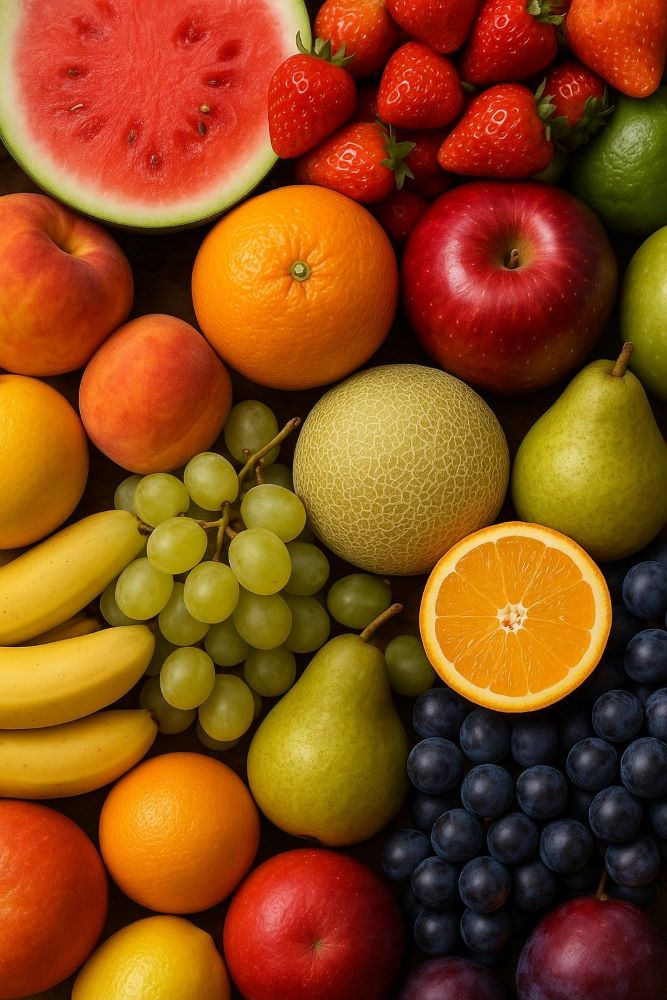

Flavor Note
커피 한 잔에 담긴 다채로운 향미의 세계를 탐험해 보세요.
꽃, 과일, 견과류 등 원두 본연의 맛을 느끼며
당신의 취향을 발견하는 즐거움을 느껴보시길 바랍니다.
|
01
Floral
꽃 향기의 향연쟈스민, 장미, 라벤더처럼 섬세하고 향기로운 노트는 주로 라이트 로스트된 워시드 프로세싱 원두에서 두드러집니다. 특히 에티오피아 예가체프나 게이샤 품종에서 잘 나타나며, 마치 봄날의 정원을 거니는 듯한 기분 좋은 아로마와 부드러운 산미가 특징입니다. 허브티처럼 깔끔하게 즐기기 좋습니다. |
|
|  |
02
Fruity
다채로운 과일의 맛베리류의 상큼함, 감귤류의 시트러스함, 혹은 잘 익은 핵과류의 달콤함까지, 과일 노트는 커피의 산미와 직결됩니다. 케냐 원두는 블랙커런트 같은 짙은 베리 향을, 코스타리카 원두는 오렌지 같은 밝은 산미를 선사합니다. 내추럴 프로세싱 원두는 종종 와인 같은 발효된 과일 향을 내기도 합니다. |
|
03
Nutty / Choco
견과류와 초콜릿의 고소함아몬드, 호두 같은 고소함이나 밀크 초콜릿, 다크 초콜릿의 달콤쌉싸름한 풍미는 가장 대중적으로 사랑받는 노트입니다. 주로 브라질, 과테말라 등 중남미 원두에서 쉽게 찾을 수 있으며, 미디엄에서 다크 로스트로 갈수록 이 풍미는 더욱 강해집니다. 균형 잡힌 바디감과 부드러운 목 넘김이 특징입니다. |
|
|
04
Spices & Etc.
개성 있는 향신료와 여운시나몬, 정향 같은 향신료나 흙, 삼나무 같은 독특한 향(Earthy)은 커피의 복합미를 더해주는 특별한 노트입니다. 인도네시아 수마트라 원두가 대표적이며, 묵직한 바디감과 긴 여운을 남깁니다. 때로는 캐러멜이나 토스트 같은 달콤한 향이 함께 어우러져 매력적인 풍미를 완성합니다. |